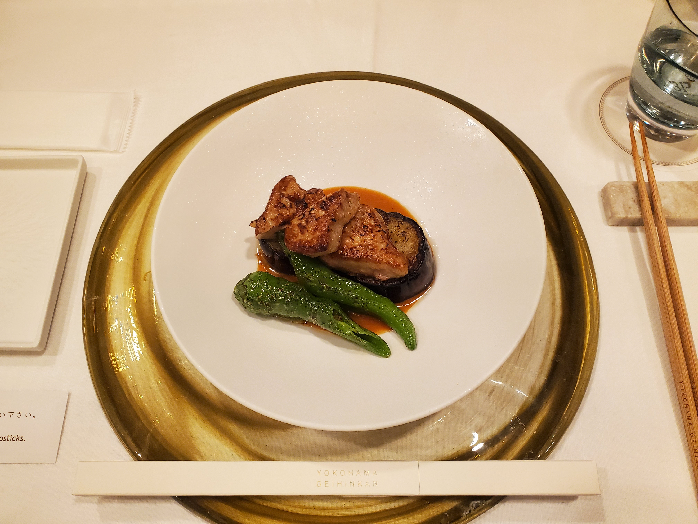
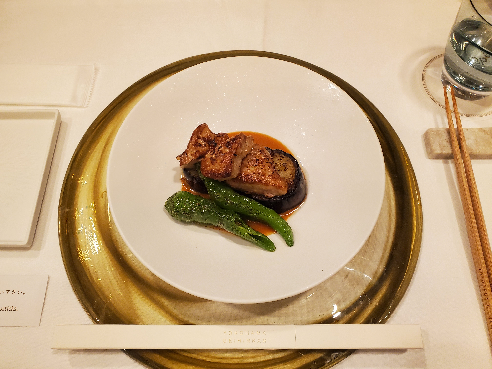
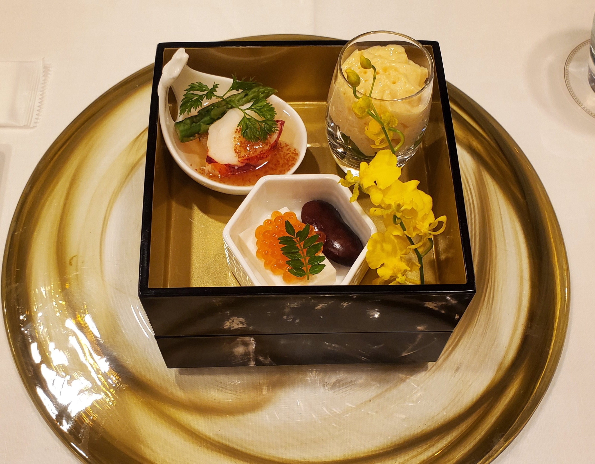
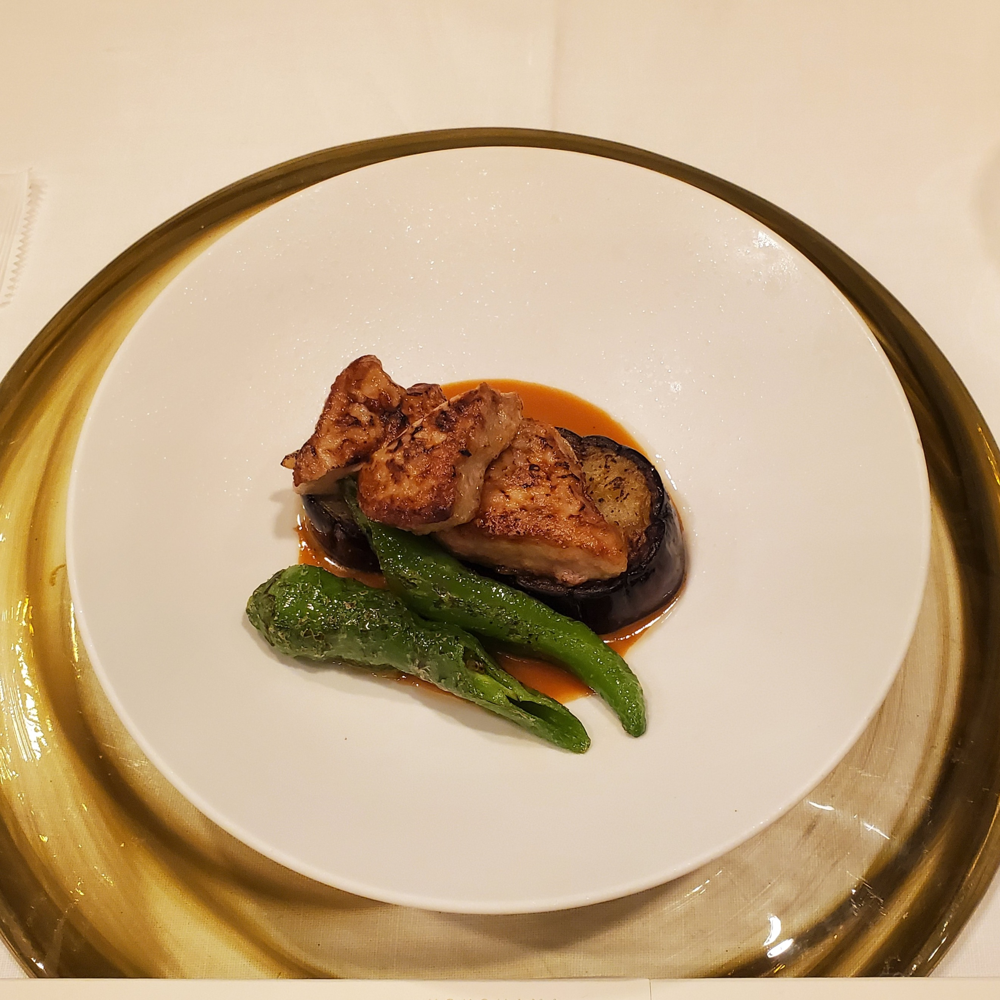
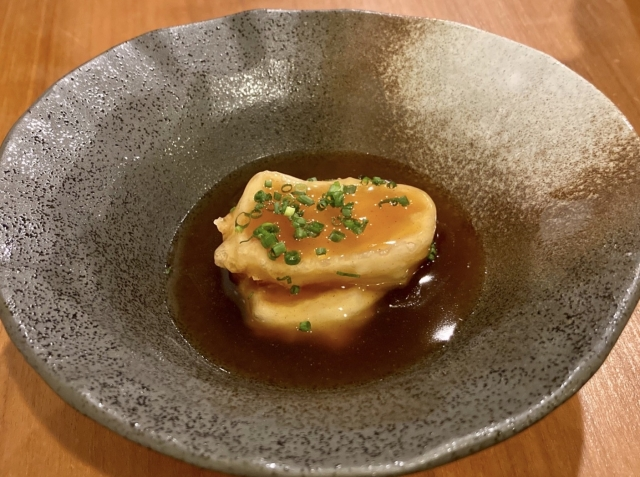
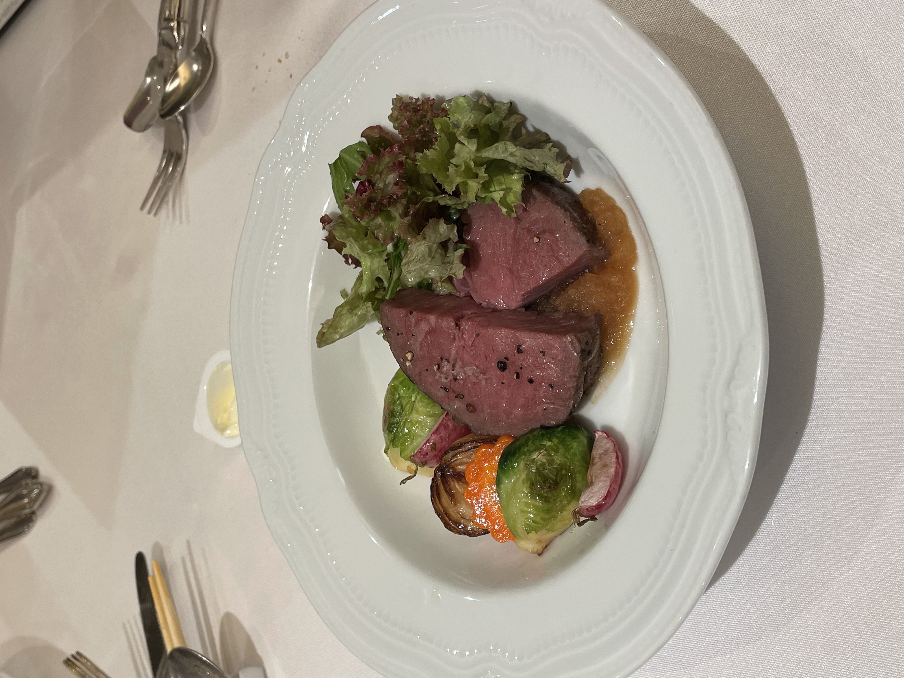

CUISEIN
婚礼料理


旬を味わう
祝宴の美しき一皿が
心に残るひとときを彩る
こだわり
囲むよろこび、つながる心。
味わいに宿る、感謝と絆のかたち
誰かを想い、手間ひまをかけてつくられた料理には、言葉以上の想いが宿ります。
その一皿を囲むことで、”人と人との心がふわりと近づいていく”
日本では食事をともにし、語らい合うことで、絆を深めてきた文化があります。
結婚式という晴れの日にこそ、そんな原点に立ち返り
感謝と祝いの気持ちを、料理を通して届けたい。
会話が弾み、笑顔が広がるひととき。
その温もりが、心にやさしく残るような祝福の時間となりますように。



春のやわらかな香り、夏の力強いみずみずしさ、秋の深い味わい、冬の澄んだ余韻――
四季折々の恵みを受けた旬の食材は、その瞬間にしか味わえない、かけがえのない贈りものです。
翠苑では、その“今”いちばんの旬を、素材本来の魅力を大切にしながら、最良のかたちでお届けします。
目で愉しみ、香りを感じ、味わいに心を委ねる
そんな五感を通じて、移ろう季節とともに、その日の記憶が静かに深まっていくのです。